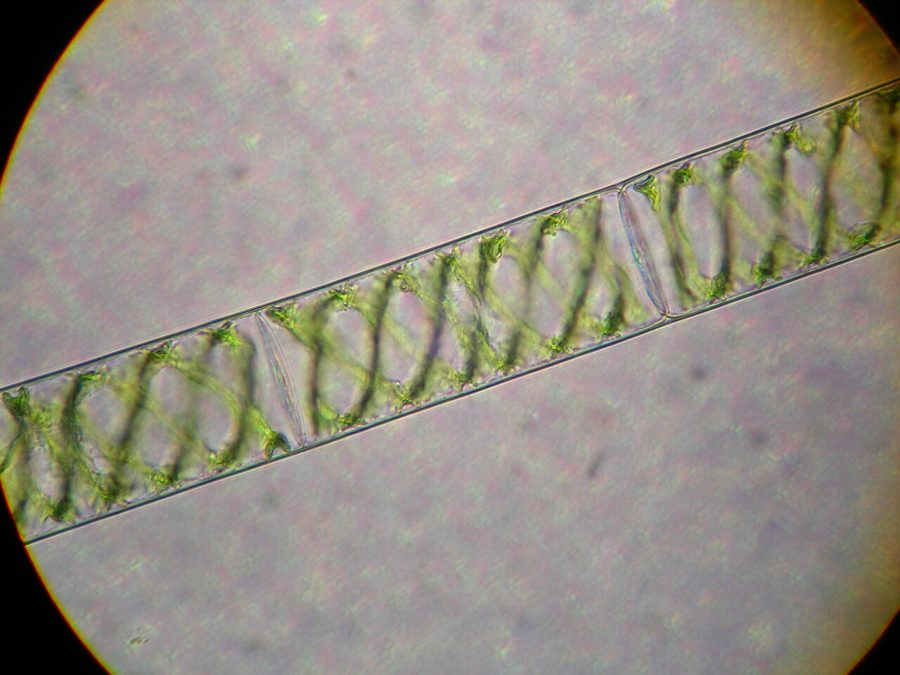

पानी की काईWater Silk
Spirogyra · Zygnemataceae · FLR-0119

- Scientific name वैज्ञानिक नाम
- Spirogyra Link
- Family कुल
- Zygnemataceae
- Hindi हिंदी
- पानी की काई
- Local names स्थानीय नाम
- pani ki kai, kai, sewar, sewal; profiled at genus level
- Status here यहाँ की स्थिति
- native
- Movement आवागमन
- Resident, here all year
- IUCN IUCN
- not evaluated
- Review समीक्षा
- audited and independently read
When to look कब देखें
Expected mainly in February, March, April, May, September, October, November. मुख्यतः फ़रवरी, मार्च, अप्रैल, मई, सितंबर, अक्टूबर, नवंबर में अपेक्षित।
Uses and possibilities उपयोग और संभावनाएँ
Drawn from the documented uses in the profile below, where each is labelled traditional, current or a research lead. All uses →
Tell it apart from इनसे अलग पहचानें
पानी की काई / Water Silk
Spirogyra Link — Zygnemataceae
पानी की काई — तालाब, नाली और धान के खेत के शांत पानी में तैरते चमकीले हरे, रेशम जैसे फिसलने वाले धागों के झुंड, जिन्हें हाथ में लो तो उँगलियों से सरक जाएँ। माइक्रोस्कोप में हर धागे के अंदर हरे रंग की एक घुमावदार पट्टी दिखती है — इसी से नाम पड़ा। यह मेंढक के बच्चों, घोंघों और छोटी मछलियों का घर और भोजन है, और पानी में ऑक्सीजन घोलने वाला पहला पौधा।
Quick Identification त्वरित पहचान
| Feature | Description |
|---|---|
| Form | Masses of fine, unbranched, bright grass-green threads, floating or draped over stones and plants |
| Feel | Slippery, silky, slimy; threads slide apart and cannot be held between fingers |
| Colour | Clean green when growing; yellow-green and frothy with bubbles in hot sun; brown when dying |
| Bubbles | Mats often lifted to the surface by trapped oxygen on sunny afternoons |
| Under a lens | Each thread a single row of cylindrical cells, each with one to several green spiral ribbons |
| Where | Still, shallow, sunlit, nutrient-rich water |
Field tip: The green slime of the village pond. Lift a handful: if it is a mass of fine unbranched threads too slippery to hold, bright green and often bubbling, it is water silk. Branched or rough threads, or dark blue-green felt, are other algae.
हिंदी — कैसे पहचानें: तालाब की हरी काई; मुट्ठी में लो तो बारीक, बिना शाखा के, रेशमी धागे जो फिसलकर निकल जाएँ; धूप में बुलबुलों से ऊपर तैरती; सूक्ष्मदर्शी में हर कोशिका के भीतर हरी घुमावदार पट्टी।
Morphology आकारिकी
Biometrics (common Indian species):
| Measurement | Range |
|---|---|
| Filament diameter | 20–150 µm |
| Cell length | 1–10 times the diameter |
| Chloroplasts per cell | 1–16, spiral |
| Zygospore diameter | 30–150 µm |
Filament: Unbranched, each cell a cylinder with a thin cellulose wall and a mucilage coat that gives the slimy feel; cells divide to lengthen the thread, and threads break to multiply.
Chloroplast: One or more ribbon-like chloroplasts wound in a helix along the cell wall, studded with starch-storing pyrenoids; the single most recognisable sight in a school microscope.
Reproduction: Mostly by fragmentation. Sexually, two filaments lie side by side and grow tubes between them, through which the contents of one cell flow to fuse with another, "conjugation", leaving a thick-walled zygospore that survives drying and cold and starts the next season's growth.
Species. Several hundred species are described worldwide and over a hundred from India, told apart by cell size, the number of spirals and the zygospore; identification to species needs reproducing material and a microscope.
हिंदी: धागा कोशिकाओं की एक कतार, हर कोशिका में घुमावदार हरी पट्टी (क्लोरोप्लास्ट)। बढ़ता है टूटकर; प्रजनन में दो धागे पास आकर नली बनाते हैं और एक कोशिका का भीतर दूसरी में बह जाता है — "संयुग्मन" — जिससे मोटी दीवार का बीजाणु बनता है जो सूखा और ठंड सह लेता है। भारत में सौ से ज़्यादा जातियाँ।
Behaviour & Ecology व्यवहार और पारिस्थितिकी
The common green alga of still fresh water everywhere on earth. Growth needs sun, stillness and nutrients, and a village pond in March supplies all three: the mats thicken, photosynthesise so hard that they froth with oxygen and float, and then, in the heat of May or under the first monsoon floods, collapse and rot, which briefly starves the water of oxygen. A thick annual bloom is a sign of a pond fed by sewage, cattle and fertiliser run-off.
In moderation it is the base of the pond's food web: tadpoles of Asian Common Toad and Indian Bull Frog graze it, Freshwater Apple Snail and smaller snails browse it, mayfly and midge larvae live in it, the fry of Rohu and other carp shelter and feed in it, and dragonfly nymphs hunt through it. Ducks pull at it. Its zygospores lie in the mud through the dry months.
हिंदी: दुनिया भर के शांत मीठे पानी की आम हरी काई। धूप, ठहराव और पोषक तत्व चाहिए — मार्च का तालाब तीनों देता है; फिर मई की गरमी या बरसात की बाढ़ में सड़ जाती है और कुछ दिन पानी की ऑक्सीजन खा लेती है। ज़्यादा काई का मतलब तालाब में गंदगी और खाद बह रही है। सही मात्रा में यह मेंढक के बच्चों, घोंघों, कीड़ों के लार्वा और मछली के बच्चों का भोजन और घर है।
Life Cycle / Phenology जीवन चक्र
| Month / season | Event |
|---|---|
| February–March | Zygospores germinate; filaments grow as water warms and clears |
| March–May | Peak bloom; floating mats |
| June–August | Mats break up in flood and turbid water; survives in sheltered pools and paddy |
| September–November | Second growth in clearing post-monsoon water |
| December–January | Slow growth; conjugation and zygospore formation in many species |
हिंदी: सर्दी के अंत में बीजाणु उगते हैं, मार्च-मई में सबसे ज़्यादा, बरसात की बाढ़ में टूटती है, पतझड़ में फिर उगती है, ठंड में बीजाणु बनते हैं।
Associated Species / Interactions संबंधित प्रजातियाँ
- Grazers: tadpoles of Asian Common Toad, Indian Bull Frog, Skittering Frog; Freshwater Apple Snail; carp fry of Rohu.
- Residents: nymphs of Ditch Jewel and Scarlet Skimmer, Indian Water Strider on the surface above.
- Fellow pond plants: Water Hyacinth, Common Duckweed, Hydrilla, Indian Lotus.
Pests and Diseases कीट और रोग
- Grazed heavily by snails and tadpoles; parasitised by chytrid fungi and rotifers. The pond's health, not the alga's, is the concern.
Agricultural / Human Relevance कृषि प्रासंगिकता
Traditional and Ethnobotanical Use (documented uses; not medical advice):
- Pond and paddy. In paddy fields a light growth is harmless and part of the field's oxygen and food economy; a heavy mat in a nursery can smother seedlings and is raked off.
- Fish ponds. Fish farmers remove thick mats, which tangle nets and cause night-time oxygen crashes, and treat causes rather than symptoms: too much manure, too little water exchange.
- Food. Spirogyra is eaten in parts of Myanmar, Thailand and north-east India (as tai or in salads); not recorded as food in Uttar Pradesh.
- Fodder and manure. Raked mats are fed to pigs and ducks and composted in some regions.
- Indicator. The size of the spring bloom is a free gauge of how much nutrient pollution a village pond receives.
Today. Treated as a nuisance; the ponds that grow the most of it are the ones most in need of attention.
Research direction (a lead, not a result). Filamentous green algae are studied as feedstock for biogas and as a nutrient-stripping stage in wastewater treatment ("algal turf scrubbers"); Indian work exists at pilot scale. A village pond choked with Spirogyra is raw material for that, and raking it regularly is itself a small nutrient-removal treatment for the pond.
हिंदी: धान में थोड़ी काई हानिरहित है, नर्सरी में मोटी परत पौध दबाती है। मछली के तालाब में मोटी काई जाल में फँसती है और रात में ऑक्सीजन घटाती है — इलाज गोबर कम करना और पानी बदलना है। पूर्वोत्तर और म्यांमार में इसे खाया जाता है, यहाँ नहीं। बसंत की काई की मोटाई बताती है कि तालाब में कितनी गंदगी बह रही है। इसे नियमित निकालना ही तालाब की एक छोटी सफाई है।
Expected Locally स्थानीय रूप से अपेक्षित
Not a field record. Written from published accounts for eastern Uttar Pradesh. No confirmed local sighting yet — if you have seen it, that is what the atlas needs.
अभी तक स्थानीय पुष्टि नहीं। यह विवरण प्रकाशित स्रोतों से है, किसी अवलोकन से नहीं।
To be expected in every village pond, tank, ditch and flooded field across the district, thickest in March and April. A photograph of the floating mats and of a handful of threads is a confirmed record for the genus; the species needs a microscope.
Distribution वितरण
Global range: Worldwide in fresh water.
In India: Throughout; over a hundred species described, many from the Gangetic plain.
In Uttar Pradesh: Every still water body.
In Basti district / eastern UP: Expected in every pond.
Research Questions शोध प्रश्न
Anyone can investigate these | कोई भी इन प्रश्नों की जाँच कर सकता है
- Which pond in the village grows the thickest spring mat, and what drains into it? / किस तालाब में बसंत में सबसे मोटी काई होती है, और उसमें क्या बहकर आता है? — Compare ponds in April; note cattle, drains and washing.
- At what hour do the mats float up with bubbles? — Check a pond hourly on a sunny day.
- What lives in a handful of water silk? — Spread it in a white tray and count.
- Does raking the mat off a pond in April change the water by June? — Try it on one pond and compare with another.
- Can the school microscope show the spiral? / क्या स्कूल के सूक्ष्मदर्शी में सर्पिल दिखता है? — A single thread in a drop of water is enough.
Similar Species मिलती-जुलती प्रजातियाँ
| Species | How to tell apart | हिंदी |
|---|---|---|
| Blanket weed (Cladophora) | Threads branched, coarse and rough, can be held between fingers; often on stones in flowing water | शाखादार, खुरदुरे धागे |
| Blue-green mats (Oscillatoria, Lyngbya) | Dark blue-green or blackish felt that smells earthy; threads much finer | गहरा नीला-हरा, मिट्टी की गंध |
| Star Jelly | Firm jelly blobs, not threads; on soil as much as in water | जेली, धागे नहीं |
| Common Duckweed | Tiny floating leaves with roots, not threads | छोटी तैरती पत्तियाँ |
Field rule: Bright green, fine, unbranched, slippery threads in still water that will not stay in the hand are water silk.
Taxonomy & Classification वर्गीकरण
Original description. The genus was established by Heinrich Friedrich Link in 1820 in Nees von Esenbeck's Horae Physicae Berolinenses, p. 5. The name describes the spiral (speira) chloroplast ribbon (gyros, a turn). This profile is at genus level.
Subspecies. Not applicable at genus level.
Family and order placement. Zygnemataceae, order Zygnematales, class Zygnematophyceae, in the streptophyte green algae (phylum Charophyta), the lineage from which land plants arose.
Phylogenetic notes. The Zygnematophyceae are the closest living algal relatives of land plants; studying Spirogyra is, in a real sense, studying the ancestry of every plant in this atlas.
IUCN status rationale. Not evaluated; algae are not assessed.
Photo Gallery फोटो गैलरी
Photos needed आवश्यक फोटो
- [ ] Floating mats on a village pond in April (तालाब पर काई)
- [ ] A handful of threads held up to the light (धागे)
- [ ] Microscope view of the spiral, if possible (सर्पिल)
Atlas Connections संबंधित प्रजातियाँ
- Asian Common Toad and Indian Bull Frog — their tadpoles graze it
- Freshwater Apple Snail — browses the filaments
- Rohu — fry shelter and feed in the mats
- Water Hyacinth and Common Duckweed — the other green cover of the pond
- Star Jelly — the other "kai", of soil rather than water
References संदर्भ
- Link, H.F. (1820). Epistola de algis aquaticis in genera disponendis. In Nees von Esenbeck, C.G., Horae Physicae Berolinenses, p. 5. Bonn. [genus]
- Randhawa, M.S. (1959). Zygnemaceae. Indian Council of Agricultural Research, New Delhi.
- Transeau, E.N. (1951). The Zygnemataceae. Ohio State University Press, Columbus.
- Prescott, G.W. (1962). Algae of the Western Great Lakes Area. Wm. C. Brown, Dubuque. (genus treatment)
- Wehr, J.D. & Sheath, R.G. (eds.) (2003). Freshwater Algae of North America: Ecology and Classification. Academic Press, San Diego.
- Gontcharov, A.A. (2008). Phylogeny and classification of Zygnematophyceae (Streptophyta): current state of affairs. Fottea 8(2): 87–104.
- Jena, M. & Adhikary, S.P. (2007). Chlorococcales (Chlorophyceae) of eastern and north-eastern states of India. Algae 22(3): 167–183.
- GBIF Occurrence Data — Spirogyra, India (2026).
Source file: species/lower_plants/algae/spirogyra.md